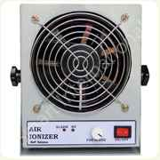
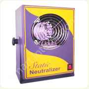
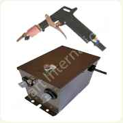
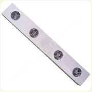

High frequency AIR IONIZER AIB-01 is the most efficient static elimination (neutralization) device that prevents parts and components of electronics industry and precision instruments against ESD (Electro Static Discharge). Moreover, the device is widely used in plastic product, printing, spray coating, film product, medicine and packing and so on.
The AIB-01 is light weight, free from EMI. It is equipped with auto ion balance and abnormal HV monitoring system.
MAIN FEATURES: Auto and stable ion balance. Special alloy discharge needle for strong static elimination capability With ionization indicator (green) and abnormal HV alarm (red) Adjustable blowing angle and air volume |
|||
| SPECIFICATION |  | ||
| Power supply volt | : | AC 230V / 50Hz | |
| Current consumption | : | 12VA | |
| Un balance voltage | : | < +/-5V | |
| Safety performance | : | Abnormal HV alarm | |
| Air Volume | : | 50 - 100 CFM | |
| Noise Level | : | 60dB(A) (Distance 1m) | |
| Construction | : | Powder coated MS cabinet | |
| Dimensions | : | 190 x 75 x 175mm | |
| Weight | : | 1.3 Kgs (including stand) | |
| Warranty | : | One year | |
The generation and accumulation of unwanted electrostatic charges, both surface and airborne, poses a serious problem in various industries and laboratories. For instance, static charges can create havoc with sensitive equipment and electronic components.
This Bench Top Instrument is designed to neutralize your ESD work-station or ESD protected area with a stream of ionized air. It does what Wrist straps, conductive mats & ESD Laminates cannot do- i.e remove static charges from non- conductive objects and surfaces.
The Static neutralizer is portable and uses a small fan to produce airflow. High voltages are generated out of the supply line, HV voltage is applied to stainless steel ion emitter points. These points produce intense alternating polarities, ionizing the air instantly from the fan airflow.
The Static neutralizer is designed for when handling sensitive electronic components where electrostatic discharge is a problem. The unit can also be used where static electricity causes problems such as; attraction of drift to product, misalignment of small parts due to electrostatic “jumping” and undesirable adhesion of plastic films due to electrostatic charge. |
|||
| SPECIFICATION |  | ||
| Air flow | : | 1.8 cu m/min | |
| Noise Level | : | 45dba (at 1 m) | |
| Power Supply | : | 210V – 250V AC/50Hz | |
| Ionization Voltage | : | +/- 6KV | |
| Un Balance Voltage | : | < +/- 100V | |
| Construction | : | Power coated MS cabinet | |
| Dimensions | : | 230 x 150 x 110mm | |
| Weight | : | Apex. 2.9 Kgs | |
| Warranty | : | One Year | |
The ionizing Air Gun is a light weight, hand-held compressed air gun utilizing a static eliminating nozzle. The gun is primarily designed for simultaneously cleaning & neutralizing small or sensitive parts and materials. Neutralizing makes it easier to blow parts clean and prevents re-attraction of dust and dirt particles. The gun is used in conjunction with a power unit which supplies the high voltage necessary for operation of the gun.
One power supply with two ionizing air gun is available but one power supply with one ionizing is the best. |
|||
| SPECIFICATION |  | ||
| Input Voltage | : | AC 230V / 50Hz | |
| Input Current | : | 120 mA | |
| Discharge (corona) voltage | : | 4 KV | |
| Effective distance | : | 100-300 mm | |
| Standard HV Cable Length | : | 3 Meter | |
| Air Pressure | : | 2.0 – 7.0 kg/cm² | |
| Relative Humidity | : | Not more than 80% RH | |
The generation and accumulation of unwanted electrostatic charges, both surface and airborne, poses a serious problem in various industries and laboratories. For instance, static charges can create havoc with sensitive equipment and electronic components.
This Over Head Ionizer is designed to neutralize your ESD work-station or ESD protected area with a stream of ionized air. It does what Wrist straps, conductive mats & ESD Laminates cannot do- i.e remove static charges from non-conductive objects and surfaces.
The Over Head Ionizer uses four small fan to produce airflow. High voltages are generated out of the supply line, HV voltage is applied to stainless steel ion emitter points. These points produce intense alternating polarities, ionizing the air instantly from the fan airflow.
The Over Head Ionizer is designed for when handling sensitive electronic components where electrostatic discharge is a problem. The unit can also be used where static electricity causes problems such as; attraction of drift to product, misalignment of small parts due to electrostatic “jumping” and undesirable adhesion of plastic films due to electrostatic charge. |
|||
| SPECIFICATION |  | ||
Air flow |
|||
| Noise Level | : | 43 dBA | |
| Power Supply | : | 210V – 250V AC/50Hz | |
| Ionization Voltage | : | +/- 6KV | |
| Un Balance Voltage | : | < +/- 100V | |
| Construction | : | Power coated MS cabinet | |
| Dimensions | : | 1220 x 200 x 120mm | |
| Warranty | : | One Year | |